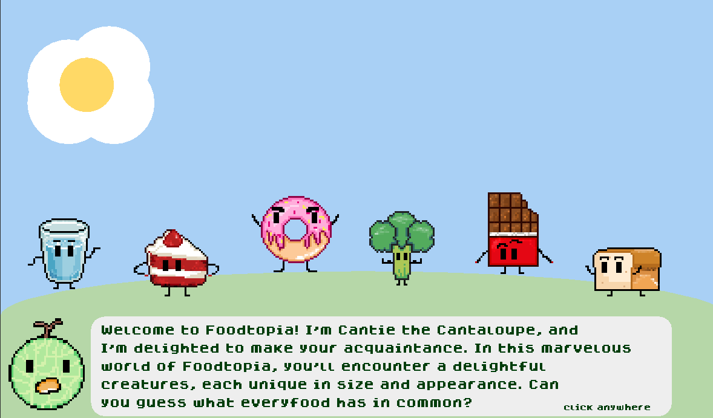
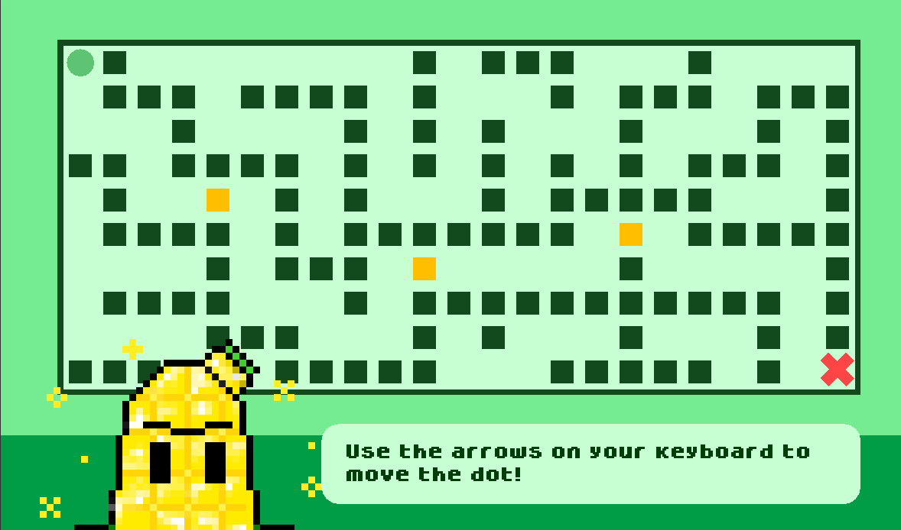
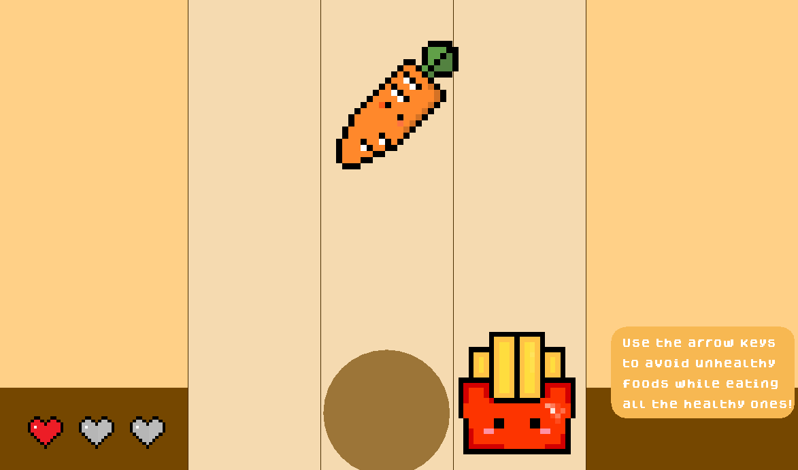
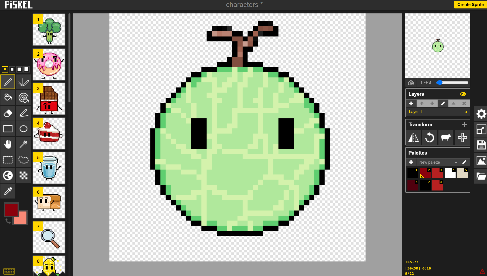

Final Project.
Foodtopia: Pick Your Food!
The objective of this year's ISP is to teach young people life skills or a lesson through the medium of a survival game based off of a real-world issue. To build our vision, Monellie and I decided to work together (as per usual since we are the dynamic duo!); that's how our company, Mister Studio came to be! "Foodtopia: Pick Your Food" is the name of the game we created, it is a game designed for children ages 5-8 who are struggling with picky eating or healthy eating. In this game, we hope to teach kids how to develop a healthy relationship with nutritious foods (much like a friendship) that will encourage them to experiment and consume them more. Meanwhile, teaching them about the terrible ingredients often "hidden" in some of the most loved junk foods. The game features an audio and visual component as well which will hopefully make it all the more appealing to our target audiences.

Learning Level
In Level 1 or "The Learning Level", players are introduced to the various creatures and characters that
roam the land of Foodtopia. Using the magnifying tool cursor, players can "zoom-in" and get a closer look
to the composition of each character. Just like how we make friends in real life, each character possesses
different traits that may make them more affable in correlation to how healthy they are. This way, we hope
that players can build a friendship with characters that will inspire them to eat more of it in real life.

Maze Level
In Level 2 or "The Maze Level", players are guided through a maze and must escape by answering Master Corn's questions. These questions are based off of the knowledge they previously learned/gathered from level 1 of the game. Some of this knowledge may include: how to recognize healthy and unhealthy foods, specific ingredients found in unhealthy foods, the benefits, and etc. Hopefully, from this level, players can leave feeling more confident about the knowledge they have aquired and can feel rewarded after escaping the maze. The player will be able to leave no matter the score that they get.
Escape Level
Upon the completion of navigating the corn maze, players are introduced to the third and final level, "The Escape Level". After the first two levels, players are now off on their own and play to test their knowledge! Different foods will drop from the top of the screen, either healthy or unhealthy, and players will have to use their critical thinking skills to quickly determine which ones are healthy and which ones are not. For the ones that are healthy, the players must try to touch them to eat them and earn points. As for the ones that are unhealthy, the players must try to avoid them or else a heart/life will be lost. At the end, users will get to see their score and have the choice to play again or exit.
My Experience

Making this game was a great experience. With the signed client and company contracts; different employee roles; and having freedom with design and mechanics, it really made me feel as if I was in a professional setting. I had a lot of fun doing this project too! Especially in regards to the graphics. Before, I don't think I ever realized just how important graphics are to the experience of the game. Through this ISP, I really got to experiment with different mediums of graphics and art (pixel art in this case!), I also got to discover a lot of cool websites and resources that I would've never known about; for example, Piskel, the software I used to make the characters and pixel art. Overall, making this game was a wonderful learning experience and as a concluding project, I just wanted to say that I really enjoyed my journey in ICS at this school and I'm really going to miss it next year. It'll feel so empty next year after having it for almost every semester thus far in my high school career. This course has really taught me so much, led me to so many brilliant opportunities and opened so many pathways that I would've never imagined. I can thank ICS for many of my friendships today and for the wonderful teachers I've met along the way. This is becoming kind of a tangent and not really about my ISP anymore, but point is, I learned a lot and will definitely cherish this experience for years to come!